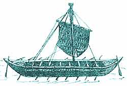
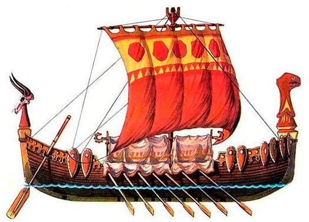
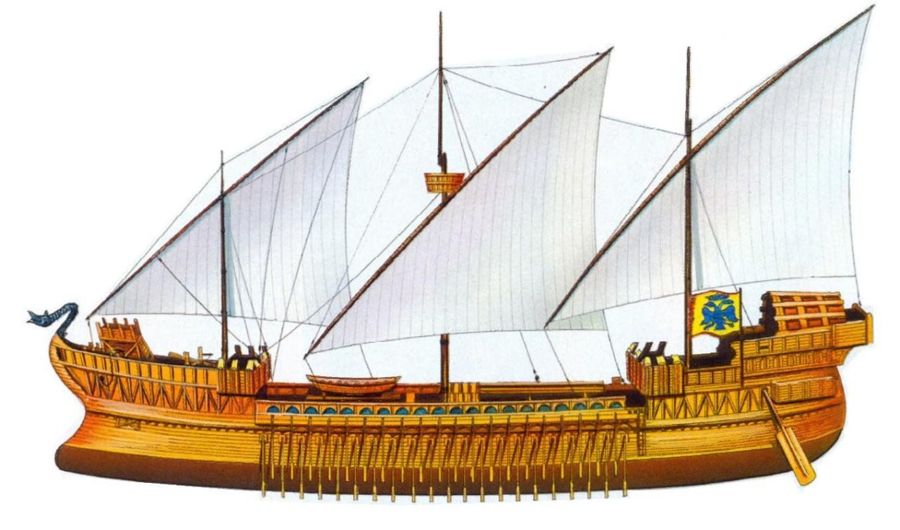
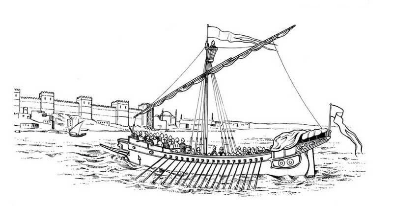
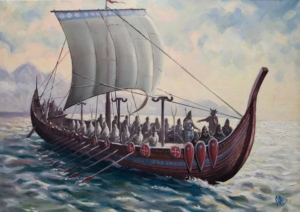
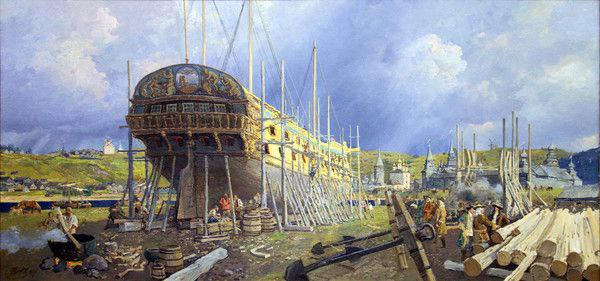

Введение
Кораблестроение на Руси до XVII века было критически важным элементом развития государства, который играл ключевую роль в экономической, военной и культурной жизни.
Основные ключевые моменты:
Исторический контекст
- Начало активного судостроения относится к IX веку
- Корабли использовались для торговых и военных походов, в частности, для экспедиций князя Олега
- Важную роль играли речные пути: Волга, Днепр и другие
Экономическое значение
- Суда обеспечивали международную торговлю
- Связывали различные регионы
- Способствовали развитию экономических отношений с Византией, Скандинавией и другими странами
Технологическое развитие
- С IX по XVII век корабли постоянно совершенствовались
- Отражали уровень мастерства русских ремесленников
- Символизировали технологический прогресс государства
Особенности периода
- До XIV века кораблестроение носило практический характер
- К XV–XVI векам развитие замедлилось через внутренние конфликты и технологические ограничения
- Заложило основу для дальнейшего подъёма при Алексее Михайловиче и Петре I
Кораблестроение рассматривалось не только как технический процесс, но и как важный элемент формирования культурной и экономической идентичности Руси.
Корабли IX–X веков: время Олега
Ладьи были основными транспортными средствами в IX–X веках, играя ключевую роль в освоении водных путей и установлении межрегиональных связей.
Основные ключевые моменты:
Первые упоминания ладей в летописях
- Ладьи использовались для торговых и военных целей
- Играли ключевую роль в освоении водных путей
- Способствовали установлению межрегиональных связей
Поход на Царьград (907 год)
- Количество ладей: 2000
- Тактика: установка кораблей на колёса
- Результат: заключение выгодного торгового договора
Технологии строительства
- Материалы: дуб, сосна, ель
- Инструменты: топоры, долота, пилы
- Методы: долбление, крепление кокор, обшивка досками
- Особенности: кожаный тент вместо палубы
Характеристики ладей
- Длина: до 20 метров
- Ширина: до 3 метров
- Экипаж: 40-60 человек
- Управление: одно весло в корме
- Особенность: малая осадка, возможность волока
Корабли IX–X веков отражали мастерство русских ремесленников и стратегическое мышление того времени.
Развитие кораблестроения в XI–XIII веках
Основные ключевые моменты:
Изменения в конструкции судов
В XI–XIII веках конструкции судов улучшались благодаря торговле и военным нуждам. Основные типы — ладьи и корабли.
- Киевские князья строили моноксилы (однодеревки) с бортами из досок. 
- Появились крупные палубные ладьи со сплошной палубой и двумя рулями (потеси). 
- Улучшены паруса и весельная система для большей мобильности.
Влияние торговли с Византией и Северной Европой
Торговля с Византией и Скандинавией привела к заимствованию технологий.
- Византийские дромоны вдохновили формы корпуса и сложные парусные системы. 
- Скандинавское «шпунтование» сделало русские корабли прочнее и водонепроницаемее.
- Использование металлических креплений укрепило корпуса.
Роль кораблей в торговле и войнах
Корабли XI–XIII веков укрепили экономическое и военное влияние Руси.
- Торговые суда обеспечивали перевозку товаров по Волге, Днепру и Балтийскому морю.
- Военные корабли использовались для экспедиций и битв, таких как Невская битва 1240 года. 
Корабли XI–XIII веков способствовали росту Руси, улучшая торговлю и укрепляя военную мощь.
Торговый транспорт XIV–XV веков
Основные ключевые моменты:
Морской транспорт
Основу морской торговли составляли легкие и маневренные суда:
- Каравеллы: быстроходные корабли для дальних маршрутов.
- Галеры: использовались на Средиземном море благодаря маневренности.
Сухопутный транспорт
На суше торговля развивалась с помощью:
- Вьючных животных (лошади, ослы) для легких грузов.
- Больших повозок для тяжелых товаров.
Водные торговые пути
Реки играли ключевую роль в торговле:
- Волга: соединяла север и юг, обеспечивая доступ к Черному и Каспийскому морям. 
- Днепр: связывал Балтику с Черным морем, поддерживал торговлю через Киев.
- Белое море: открывало пути к северу и способствовало торговле с Европой.
Струги и ладьи
Эти суда были основой речного транспорта:
- Струги: легкие, плоскодонные суда для рек и озер, оснащенные парусами и веслами.
- Ладьи: крупные суда с широкой формой, применяемые для торговли и войн.
Экономическое и социальное значение
Водный транспорт способствовал:
- Экономике: развитие торговли, доступ к ресурсам и промыслам.
- Социальному влиянию: культурному обмену, урбанизации и укреплению связей между регионами.
Торговый транспорт XIV–XV веков был основой экономического и социального развития Руси, связав регионы и обеспечив культурный обмен.
Состояние кораблестроения XVI–XVII веков
Судостроение на Руси в XVI–XVII веках находилось в стадии застоя из-за экономических трудностей и слабой промышленной базы. Однако уже при Алексее Михайловиче начались первые реформы, а с Петром I Русь вступила в новую эпоху мореплавания.
Основные ключевые моменты:
Ранние попытки создания флота
- Иван Грозный в 1570 году создал каперскую флотилию.
- Алексей Михайлович построил суда «Фредерик» (1635) и «Орёл» (1668). 
Начало регулярного флота
Петр I начал строительство регулярного флота в 1695 году:
- Закладка галеасов и галер в Воронеже, Брянске и других городах.
- Создание крупных верфей в Вавчуге, Архангельске и Санкт-Петербурге.
- К 1703 году построен «Св. Апостол Андрей Первозванный» для загранплавания.
Роль Петра I в развитии флота
- 1717: создание Коммерц-коллегии для управления строительством торговых судов.
- 1724: Морской торговый устав для защиты коммерческих интересов России.
- Запуск международных маршрутов, включая связь с немецкими портами.
Итоги эпохи
К 1725 году Россия имела ограниченное число коммерческих судов, но заложила основы морского и торгового флота. Нехватка судов вынуждала использовать военные корабли для торговли.
Реформы Петра I дали мощный толчок кораблестроению, обеспечив выход России на мировую арену морской торговли.
Заключение
Корабли играли ключевую роль в развитии торговли, военных походов и становлении Руси как мощного государства.
Основные этапы развития кораблестроения
- Древний период: челны-однодеревки и ладьи для плавания по Черному морю.
- XII век: строительство первых палубных судов для защиты гребцов.
- XV век: появление верфей для промысловых судов (Соловецкий монастырь).
- XVI–XVII века: развитие торговли и речных путей, строительство трехмачтовых кочей.
Влияние кораблестроения
- На торговлю: развитие ремесел и связей через маршруты, такие как путь «из варяга в греки».
- На военные походы: обеспечение мобильности и защиты, укрепление государства.
- На развитие: стимул для технологий, ремесел и урбанизации.
Кораблестроение заложило фундамент для становления Руси как сильного государства. Его влияние охватывало торговлю, военные успехи и экономическое развитие, что привело к расцвету морской мощи в эпоху Петра Великого.
Модель корабля
Участники проекта
- Петрова Анастасия Павловна
- Абросимова Дарья Константиновна
-
 Мезенцева Вероника Денисовна
Мезенцева Вероника Денисовна
- Вандышева Кира Витальевна
- Устьянцева Мария Евгеньевна
- Андреева Анастасия Андреевна
- Якимова Валерия Михайловна
- Разбежкин Дмитрий Вячеславович